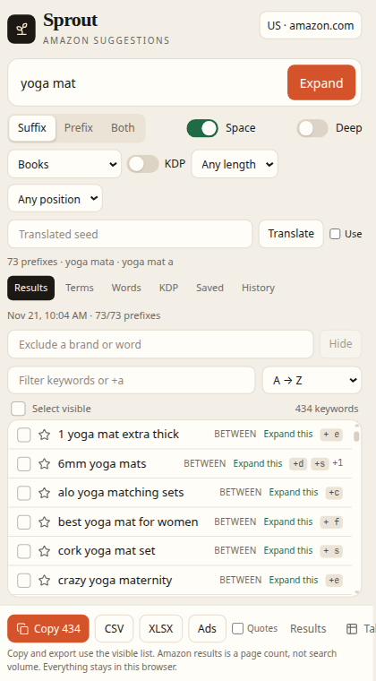
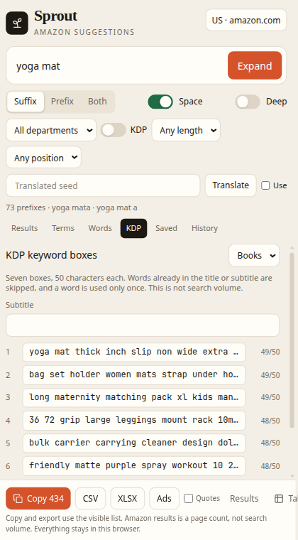

See it in action
What the KDP keyword boxes are for
When you set up a book in Amazon KDP, the form includes seven keyword fields. Amazon’s help has long described a 50-character limit in each box. Those boxes are one of the ways readers can find the book in search, together with the title, subtitle, description, categories, and the book’s own sales and page activity.
They are not a place to paste a stuffed sentence, a competitor’s author name, or claims you cannot stand behind. They work best as short, relevant phrases a reader might type. Confirm the current rules and character limits in KDP’s own help before you publish; this page is not Amazon documentation, and the form can change.
Why autocomplete is a better starting point than guessing
A seed such as “sleep story” or “yoga for beginners” already has an official list of completions: the phrases Amazon shows as someone types. Expanding that list — the seed plus each letter or a short connector word — gives you reader language you can check, instead of a list you invented in a spreadsheet.
That still is not search volume. A suggestion can be common in autocomplete and still be a poor fit for your book. Read every phrase, search it on Amazon in the Books or Kindle store, and keep only what honestly describes the book.
A simple 7×50 workflow in Sprout
- Install Sprout from the Chrome Web Store. There is no account.
- Set the department to Books or Kindle, or start from an Amazon search that is already in that department, so the suggestions stay in the book store.
- Enter a seed a reader would type, then expand it. Try a second seed if the first is too narrow or too broad.
- Open KDP mode and paste your title and subtitle. Sprout skips those words and does not reuse a word across the seven boxes.
- Review each 50-character box. Swap out anything irrelevant, branded, or misleading, then paste the seven lines into KDP.


How to choose phrases that fit the boxes
- Prefer phrases readers use, not publisher jargon. “cozy mystery with cats” is closer to a search than a BISAC label.
- Leave out words that already appear in the title or subtitle. The boxes have little room; repeating those words wastes it.
- Do not pack a box with the same word in every order just to fill 50 characters. Sprout already avoids reusing a word.
- Exclude brand names, series titles, or author names you do not have the right to use.
- If you publish in more than one marketplace, expand the seed on that storefront. Suggestions on amazon.de are not the same as on amazon.com.
The Words tab can show which modifiers appear often in the suggestion list. Treat that as a hint, not as demand. For a result-count read on a selected phrase, remember that the number is how many items Amazon lists, not how many people search.
What this tool will not do
Sprout will not estimate searches, royalties, or competition, and it will not upload keywords to your KDP account. It will not choose categories for you. It is a free, local expander: the list comes from Amazon autocomplete, the seven boxes are assembled on your device, and you paste them into KDP yourself.
If you also sell products, the same install can build Backend Search Terms and an Ads CSV. A comparison with a popular paid expander is here: AMZ Suggestion Expander alternative.
Frequently asked questions
How many keyword boxes does Amazon KDP give you?
The KDP book setup form provides seven keyword fields. Amazon’s help has long described a limit of 50 characters in each box. Confirm the current limit in KDP’s own documentation before you publish, because Amazon can change the form.
Is there a free KDP keyword tool that fills those seven boxes?
Sprout’s KDP mode builds seven 50-character boxes from Amazon autocomplete. It skips words already in the title or subtitle and does not reuse a word across the boxes. It is free, with no account. It does not estimate search volume or royalties.
Should KDP keywords repeat words from the book title?
In general, no. Title and subtitle already help readers find the book, so the seven boxes are better used for relevant phrases that are not already there. Sprout can skip those words automatically when you enter the title and subtitle.
Can I limit suggestions to the Kindle or Books department?
Yes. Sprout can scope autocomplete to a department such as Books or Kindle, so a seed like “yoga” is more likely to suggest books and less likely to suggest mats or clothing.
Does this tool work for low-content and fiction the same way?
The mechanics are the same: one seed, a department, and seven boxes. The seeds you choose should match what a reader would type for that book. Sprout will not invent a category, BISAC, or sales forecast.